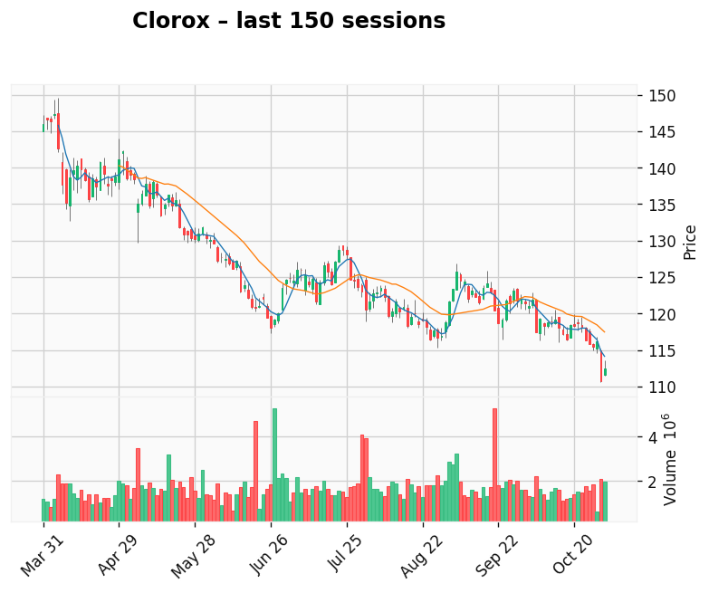

AI-generated analysis combining predictive modeling and recent market context.
T-Mobile US
Gap: 11.66% Candle: 73.87% (white)
T-Mobile US may start rebounding tmrw as it looks tom much sell off. Bad sentiment on company may contniue but we that AI shows high probability of rebound. (73.87%, gap 11.66%). No fresh news available.

Clorox
Gap: 9.60% Candle: 71.76% (white)
Clorox shows same possible pattern to rebound as deep sell of drag company to much down compare ro recent SMA and bolinger bands We recon that latest bad news in company are priced in.In my opinion, the current drop in CLX looks largely driven by structural challenges, not just temporary market noise. The combination of weak demand, retailers pulling back, and operational transitions creates a higher risk profile.
If you’re considering this stock:
Be clear you’re investing with a longer-horizon view and risk that recovery may take time.
Look for signs of stabilizing volumes and margins as a key inflection point.
If you’re more conservative, you might wait for clearer evidence of the turnaround. (71.76%, gap 9.60%). No fresh news available.
